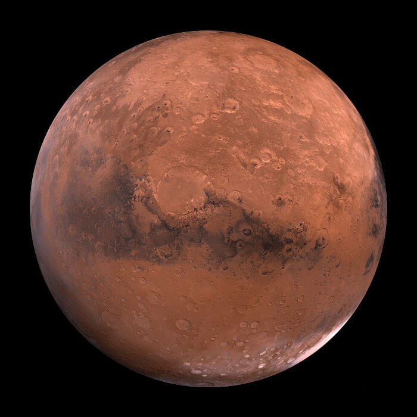

|

MARS
Mars, Güneş’e en yakın dördüncü gezegen olup “Kızıl Gezegen” olarak bilinir. Bu ismini, yüzeyinde bulunan demir oksit (pas) nedeniyle kırmızımsı bir
renge sahip olmasından alır. Boyut olarak Dünya’nın yaklaşık yarısı kadardır ve yüzeyi, dağlar, vadiler, lav düzlükleri ve devasa kraterlerle kaplıdır.
Güneş Sistemi’ndeki en yüksek dağ olan Olympus Mons ve en derin kanyon sistemi olan Valles Marineris Mars’ta bulunur.
Mars’ın atmosferi oldukça incedir ve büyük oranda karbondioksitten oluşur. Bu atmosfer, Güneş’ten gelen ısıyı tutacak kadar yoğun değildir; bu nedenle
gezegen oldukça soğuktur. Ortalama sıcaklığı -60°C civarındadır, kutuplarda ise -120°C’ye kadar düşebilir. Atmosferde oksijen çok az olduğu için, insanlar
özel donanımlar olmadan burada nefes alamaz.
Mars’ın yüzeyinde rüzgarlar ve toz fırtınaları sıklıkla görülür. Bu fırtınalar bazen haftalarca sürebilir ve tüm gezegeni kaplayabilir. Gezegenin
kutuplarında su buzu ve donmuş karbondioksitten oluşan kutup örtüleri bulunur. Bu buz tabakaları, mevsimsel olarak eriyip donarak Mars’ın ikliminde
belirgin değişimlere neden olur.
Bilim insanları, Mars’ın geçmişte daha kalın bir atmosfere ve yüzeyinde sıvı halde suya sahip olabileceğini düşünüyor. Bu da Mars’ta bir zamanlar
mikroskobik yaşam formlarının var olmuş olabileceği ihtimalini gündeme getiriyor. NASA ve diğer uzay ajansları, bu olasılığı araştırmak için birçok uzay
aracı ve robotik keşif aracı göndermiştir. Özellikle Curiosity, Perseverance ve Opportunity gibi keşif araçları, yüzeyde kaya örnekleri toplayarak Mars’ın
geçmişine dair önemli veriler sağlamıştır.
Mars’ın iki küçük uydusu vardır: Phobos ve Deimos. Bu uydular düzensiz şekillidir ve muhtemelen geçmişte Mars’ın yörüngesine girmiş asteroitlerdir.
Sonuç olarak Mars, hem bilimsel hem de keşif açısından insanlık için büyük bir merak konusudur. Dünya’ya görece yakın olması ve yüzey koşullarının diğer
gezegenlere göre daha elverişli olması nedeniyle, gelecekte insanların kalıcı olarak yerleşmeyi planladığı ilk gezegen olarak görülmektedir.
|